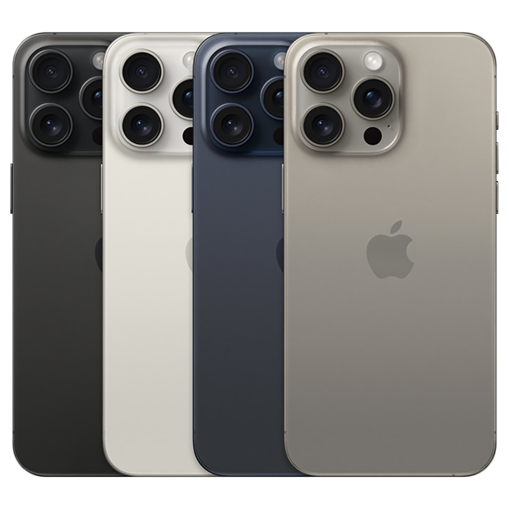
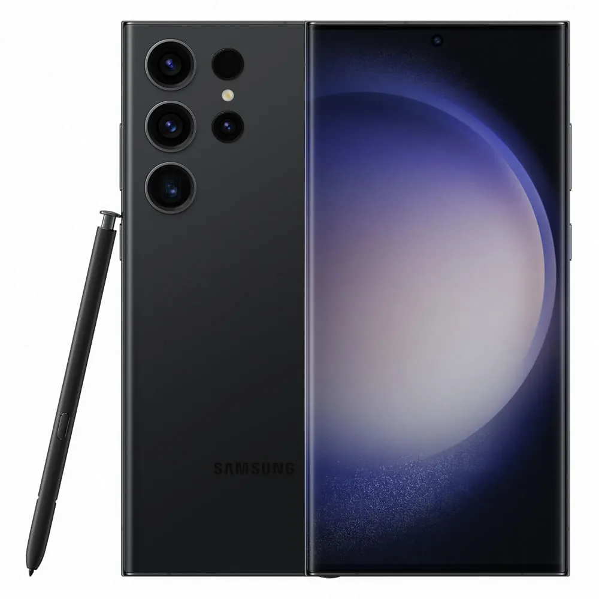

NerdTecnologia1339
Se você está em busca de um novo smartphone, chegou ao lugar certo! Com tantas opções no mercado, escolher o aparelho ideal pode ser uma tarefa difícil. Seja você um entusiasta da tecnologia ou apenas alguém que precisa de um celular confiável para o dia a dia, nossa equipe preparou uma análise completa com os melhores celulares do ano. Quer saber qual celular mais combina com você? Continue lendo para descobrir!
NerdTecnologia1339
Top de Linha:
Os celulares topo de linha oferecem o que há de mais avançado em tecnologia. Marcas como Apple, Samsung e Google dominam esse segmento
iPhone 15 Pro Max:
O mais recente da Apple, famoso pela integração perfeita de hardware e software, tem um dos processadores mais rápidos do mercado (A17 Bionic) e câmeras de alta qualidade, além de uma excelente duração de bateria. É ideal para quem quer um sistema otimizado e fluído, com longos anos de suporte.
Samsung Galaxy S23 Ultra:
Com uma câmera poderosa de 200 MP, processador Snapdragon 8 Gen 2, e tela Dynamic AMOLED de 6,8 polegadas, o S23 Ultra é um dos favoritos para fotografia, além de contar com o S Pen para produtividade.
Google Pixel 8 Pro:
O Pixel se destaca pelo software otimizado, especialmente em fotografia computacional. Suas câmeras oferecem resultados excepcionais em diferentes condições de luz, e o software Android puro garante atualizações rápidas.
NerdTecnologia1339
Intermediários Premium:
Os smartphones intermediários premium trazem muitas das funcionalidades dos flagships a preços mais acessíveis. Aqui, empresas como Xiaomi, OnePlus e Motorola oferecem boas opções.
Xiaomi 13T Pro:

Com o processador MediaTek Dimensity 9200 e um conjunto de câmeras Leica, ele entrega uma excelente experiência por um preço mais acessível do que os flagships. A tela AMOLED e a bateria de 5000mAh com carregamento rápido são grandes atrativos.
OnePlus 11:

Oferece o Snapdragon 8 Gen 2 e uma experiência de software fluída com o OxygenOS. Seu design elegante, tela de 120Hz e carregamento rápido são características que o tornam competitivo.
Motorola Edge 40 Pro:

A Motorola vem se destacando com smartphones com boas câmeras, desempenho sólido e um Android quase puro. Esse modelo oferece uma ótima relação custo-benefício, com uma tela P-OLED de 165Hz e Snapdragon 8 Gen 2.
NerdTecnologia1339
Intermediários (Custo-benefício)
Os intermediários se destacam por equilibrar bem o desempenho e o preço. Marcas como Samsung, Xiaomi e Realme oferecem ótimos produtos nesse segmento.
Samsung Galaxy A54:

Um dos melhores da linha intermediária da Samsung, ele oferece uma tela AMOLED de 120Hz, boa câmera e uma duração de bateria que pode durar o dia todo.
Xiaomi Redmi Note 12 Pro:

Famoso por seu preço competitivo, o Redmi Note 12 Pro traz uma tela OLED, câmera principal de 50 MP e uma bateria de 5000mAh, o que o torna um dos melhores custo-benefício do mercado.
Realme 11 Pro:

A Realme oferece smartphones com designs modernos e recursos poderosos, e o 11 Pro, com sua tela de 120Hz e bateria de longa duração, é uma boa escolha para quem busca um bom desempenho sem gastar muito.
NerdTecnologia1339
Celulares de Entrada (Básicos)
Para quem precisa de um smartphone funcional, mas com orçamento mais apertado, os celulares de entrada oferecem o básico.
Moto G Power:

Com uma excelente bateria de 5000mAh, é ideal para quem prioriza a duração de bateria acima de tudo. O desempenho é suficiente para uso básico, como redes sociais e navegação na internet.
Samsung Galaxy A14:

Um dos modelos mais acessíveis da Samsung, com uma tela grande de 6,6 polegadas e uma câmera de 50 MP, oferecendo bom desempenho em tarefas cotidianas.
Xiaomi Redmi 10C:

Um dos mais baratos da Xiaomi, com uma tela grande, bateria duradoura e um bom desempenho para redes sociais e aplicativos mais leves.